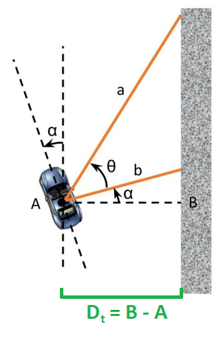
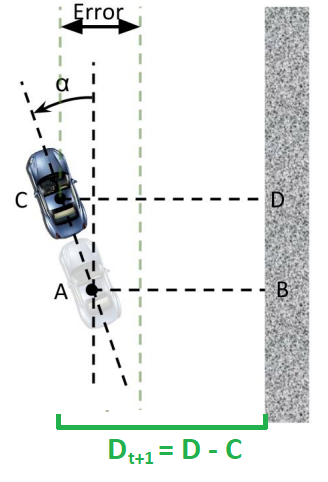

Wall Following Theory¶
I. Learning Goals¶
PID Controllers
Driving the car autonomously via Wall Following
II. Review of PID in the Time Domain¶
A PID controller is a way to maintain certain parameters of a system around a specified set point. PID controllers are used in a variety of applications requiring closed-loop control, such as in the VESC speed controller on your car.
See also
For a detailed explanation of PID steering control implementation, see Steering Adjustment Using PID.
The general equation for a PID controller in the time domain, as discussed in lecture, is as follows:
Here, \(K_p\), \(K_i\), and \(K_d\) are constants that determine how much weight each of the three components (proportional, integral, derivative) contribute to the control output \(u(t)\). \(u(t)\) in our case is the steering angle we want the car to drive at. The error term \(e(t)\) is the difference between the set point and the parameter we want to maintain around that set point.
III. Wall Following¶
In the context of our car, the desired distance to the wall should be our set point for our controller, which means our error is the difference between the desired and actual distance to the wall. This raises an important question: how do we measure the distance to the wall, and at what point in time? One option would simply be to consider the distance to the right wall at the current time t (let’s call it \(D_t\)). Let’s consider a generic orientation of the car with respect to the right wall and suppose the angle between the car’s x-axis and the axis in the direction along the wall is denoted by α. We will obtain two laser scans (distances) to the wall: one 90 degrees to the right of the car’s x-axis (beam b in the figure), and one (beam a) at an angle Θ (0 < Θ ≤ 70 degrees) to the first beam. Suppose these two laser scans return distances a and b, respectively.


Figure 1: Distance and orientation of the car relative to the wall
Using the two distances a and b from the laser scan, the angle Θ between the laser scans, and some trigonometry, we can express α as
We can then express \(D_t\) as
to get the current distance between the car and the right wall. What’s our error term \(e(t)\), then? It’s simply the difference between the desired distance and actual distance! For example, if our desired distance is 1 meter from the wall, then \(e(t)\) becomes \(1 - D_t\).
However, we have a problem on our hands. Remember that this is a race: your car will be traveling at a high speed and therefore will have a non-instantaneous response to whatever speed and servo control you give to it. If we simply use the current distance to the wall, we might end up turning too late, and the car may crash. Therefore, we must look to the future and project the car ahead by a certain lookahead distance (let’s call it L). Our new distance \(D_{t+1}\) will then be


Figure 2: Finding the future distance from the car to the wall
We’re almost there. Our control algorithm gives us a steering angle for the VESC, but we would also like to slow the car down around corners for safety. We can compute the speed in a step-like fashion based on the steering angle, or equivalently the calculated error, so that as the angle exceeds progressively larger amounts, the speed is cut in discrete increments. For this lab, a good starting point for the speed control algorithm is:
If the steering angle is between 0 degrees and 10 degrees, the car should drive at 1.5 meters per second.
If the steering angle is between 10 degrees and 20 degrees, the speed should be 1.0 meters per second.
Otherwise, the speed should be 0.5 meters per second.
Summary: Wall Following Algorithm¶
So, in summary, here’s what we need to do:
Obtain two laser scans (distances) a and b.
Use the distances a and b to calculate the angle α between the car’s x-axis and the right wall.
Use α to find the current distance \(D_t\) to the car, and then α and \(D_t\) to find the estimated future distance \(D_{t+1}\) to the wall.
Run \(D_{t+1}\) through the PID algorithm described above to get a steering angle.
Use the steering angle you computed in the previous step to compute a safe driving speed.
Publish the steering angle and driving speed to the
/drivetopic in simulation.